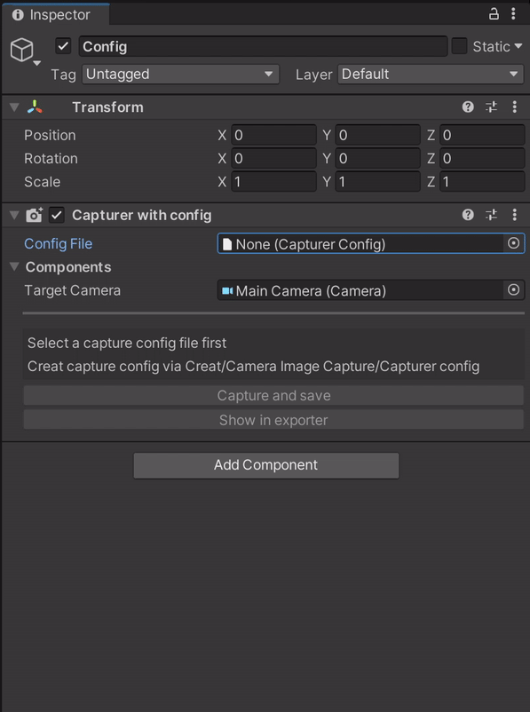

Quick Start
Version 0.5.0 Update:
Recommend use component Capture with config
Create a config asset by click the plus button in the Project window and follow Camera Image Capture/Capturer config

Editor
Component
Add component
CameraImageCaptureto aGameObjectviaCamera Image Capture/CameraImageCaptureConfig
CameraImageCapturevalue in the Inspector.Target Camera : Target camera for capture
File Name : The name of captured image file
Export folder : The folder for the captured image file.
Image serialized : Is the image file name serialized. If set to true, the file name will be [fileName]-0.jpg [fileName]-1.jpg ...
Is Log Capture : Is log capture information when image captured
Write type :
- Main Thread: Write the file in main thread. It will block the main thread
- Async: Write the file asynchronous. Caution use this type in MonoBehavior.Update() function
Image format : PNG JPG TGA
Is Override Camera Resolution : False to set your own image resolution. Image will follow target camera FOV Axis
Click Capture and save button for capturing
EditorWindow
Open
Camera Image Capturewindow viaTools/Camera Image Capture/CapturerAdd and Config
CaptureConfigvalue in the Inspector.Click Capture and save button for capturing
Runtime
Static Singleton
using SuiSuiShou.CIC.Core;
using UnityEngine;
public class SampleScript : MonoBehaviour
{
void Start()
{
Photographer.IsImageSerial = false;
Photographer.ImageResolution = new Vector2Int(1920, 1080);
Photographer.CaptureAndSaveImage();
}
}
Component
Assign the
CameraImageCapturecomponent in your codeCall
CameraImageCapture.CaptureAndSaveImage()CameraImageCapturefields can changed during runtimeCode Sample
using SuiSuiShou.CIC.Core;
using UnityEngine;
public class SampleScript : MonoBehaviour
{
public CameraImageCapture cic;
private void Start()
{
cic.FileName = "Sample";
cic.ImageResolution = new Vector2Int(1920, 1080);
cic.CaptureAndSaveImage();
}
}